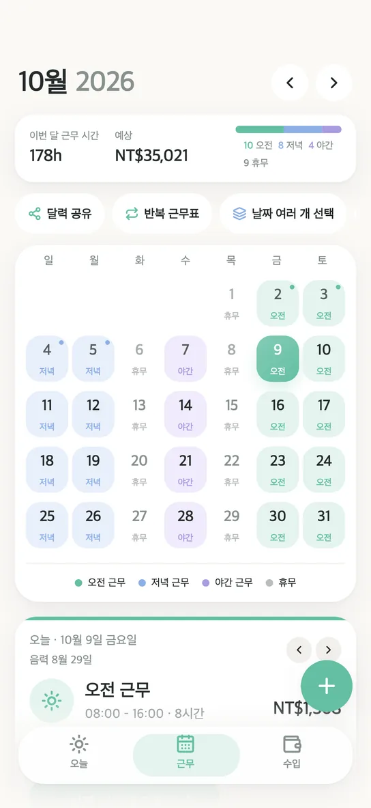

교대 일정부터 예상 급여까지 한곳에서.
교대근무와 아르바이트 일정을 한 달력에 모으세요. 실제 출퇴근 시간과 휴게시간을 기록하고 급여일 전에 예상 급여를 확인하세요.
App Store에서 다운로드iPhone 및 iPad용 무료 다운로드. Pro는 선택 사항입니다.

교대근무 일정을 한 달력에
주간·야간 근무에 원하는 시간과 색을 지정하세요. 반복 일정을 만들고 여러 직장의 근무를 모아 볼 수 있어요.
실제로 일한 시간 기록
출퇴근 시각, 무급 휴게시간과 수당을 기록하세요. 인수인계 메모, 사진, 할 일은 해당 근무에 남겨 두세요.
급여일 전에 예상 급여 확인
급여와 초과근무 기준에 따라 기간별 급여를 추정하고, 실제로 받은 금액도 기록할 수 있어요.
일정과 근무 시간 기록, 예상 급여는 계정 없이 이용할 수 있습니다. Pro에는 알림, 내보내기 및 백업 기능이 포함됩니다.
App Store에서 다운로드